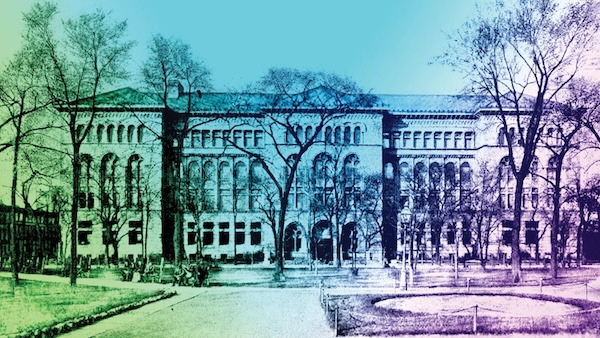

NewberryFest: All About Maps!
Join us for our winter NewberryFest, designed to help both new and returning visitors learn more about the Newberry. This year’s cartography-focused event will lean into our extensive collection of maps from across time and place and take over the first floor of the library, providing unique opportunities for engagement, education, and enjoyment!
NewberryFest is a free and open to all; register below to receive updates and reminders.
Come face-to-face with extraordinary maps and related items from our collections and have your questions answered by our expert librarians and curators.
Learn from our map curator about how to find and enjoy materials in our collection in Ruggles Hall from 12 to 12:30pm.
Make your own map-inspired art through collage and papermaking in Ruggles Hall from 1 to 3pm.
Visit our latest exhibitions, Mapping Outside the Lines and From Page to Pixel: Discovering the Digital Newberry.
Join a docent-led building tour to learn about the library’s nearly 140-year history.
Shop our used book sale, which promises to offer literary treasures at low prices.